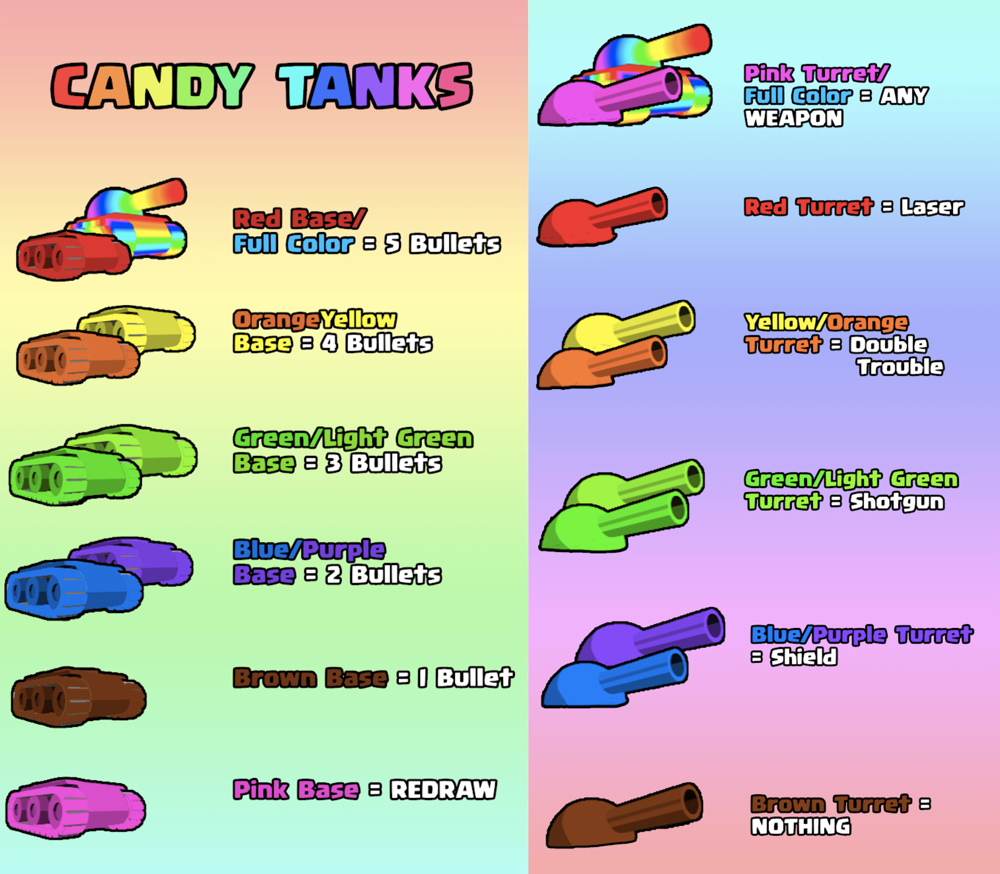

Community Gamemodes
These are gamemodes made and submitted by the TankTrouble Community, mostly submitted during the 10th Anniversary of TankTrouble, when there was a special TTOC to determine the 10th Anniversary special gamemode, which Candy Tanks won.
Feel free to play these gamemodes whenever you like!
If you’d like to add your gamemode here, please contact us via our feedback form at the bottom of the page.


Candy Tanks
By mud
Voted as Limited Edition Gamemode (Played during 10th Anniversary of TankTrouble)
- Kill your opponent and survive the round with limitations.
- At the start of every 4 rounds, players must add a guest and check the template to see how many weapons and bullets they can use.
- Every 4 rounds, guest accounts are to be changed, even if there are ties.
- When both players state their limitations, they must destroy themselves and start the next round.
- DURING Seasonal Maze Themes: Redraw. If another appears keep suiciding until a regular maze appears.
- If an unwanted powerup is in your path, pick it up and dispose of it immediately.
- If a player picks up the wrong weapon or uses more than the designated amount of bullets they were permitted to use, the opponent receives a free win.
- First player to 10 wins with a 2 win difference, wins.
Candy Tanks Template
To determine each player's limitations
Target
Retired TTOC Gamemode
- Hit the Target Square from the Aiming Square.
- The Spectator will select an Aiming Square and a Target Square that are 7 - 15 blocks apart.
- The first shooter alternates every match.
- The target should be significantly hard to hit with an average of 6 bounces to hit the target.
- The players will each take turns aiming for the Target Square from the Aiming Square.
- The player’s turn begins when they enter the Aiming Square.
- Players have 20 seconds to aim at the Target Square from anywhere in the Aiming Square as long as their tank fully inside the square.
- If a player exceeds the time limit, their turn automatically ends and the spectator will announce the end of the turn in the chat.
- If the bullet goes through the Target -- Ruled by the Spectator -- the Player gets a point. If both players hit the Target Square, both receive a point.
- Once the first player’s bullet despawns, it is the next player’s turn to aim at the Target.
- After each player has taken a turn on the same Target, everyone must move to the next maze.
- If anyone dies to a bullet intended to hit a target, the round will not count and the match continues in the next maze.
- If a player is showing signs of attempts to sabotage the other player’s shots, they will be immediately eliminated by the Spectator
- First player to at least 5 wins with a 2 win difference, wins.
Laser
Retired TTOC Gamemode
- A battle with only lasers.
- Both players start with only one laser loaded.
- Players will start in one of the outer corners of the maze, which they must "claim" by announcing it in chat, while being in the corner with a laser.
- Players may pick up and use lasers infinitely after the round starts.
- A round begins when players are in their corners, and Spectator tanks are destroyed.
- First player with at least 15 wins with a 2 win difference, wins.
Houdini's Death Trap
By Raika_TheDestroyer
Roles (Swap each round)
- Trapped: Player in the dead end trying to escape
- Hunter: Player trying to kill the Trapped
Rules
- Escape the Death Trap.
- The Hunter picks their opponent’s Death Trap which is a dead end in the maze, which must be approved by the spectator (3+ blocks in dead end).
- The Trapped must start at the end of the Death Trap.
- Spectator tanks are destroyed to start the round after the Death Trap is set.
- The Hunter can only shoot three bullets into the Death Tap and can only fire again once the 3 bullets have disappeared, if more are shot the Trapped player receives a free win.
- The Trapped player can fire as many bullets and weapons as they wish.
- Weapons can only be picked up by the Killer if they have no bullets in the maze.
- Regular round: If the Trapped player escapes, the round will not end until one of the players die.
- Special round: The Trapped player may choose to allow the Hunter to shoot all their bullets into the Death Trap, and if the Trapped player escapes, they automatically receive a win. This must be announced at the start of the round and confirmed by the Spectator.
- Spectator must make sure whether the round is Regular or Special and announce before round starts.
- First player with at least 15 wins with a 2 win difference, wins.
Fight or Flight
By supervolcano
Roles
- Gold player: Player who must collect gold to win.
- Armed player: Player who must kill Gold player to win.
Rules
- Start in a full corner, claim it in the chat by saying “Claimed”.
- The spectator will select a specific crate to fight over.
- Collecting gold before the power-up is taken results in a loss.
- Players only get 5 bullets in total (no reload) unless one picks up a weapon, after using the power-up, players are allowed 1 bullet (infinite reload).
- Either player can get the power-up, whoever does is the Armed player, and the opponent is the Gold player.
- If any other power-up is picked up, it must not be used.
- The Gold player without the extra ammo must then collect all of the gold to win, they can kill the Armed player with their 5 bullets to win as well.
- The Armed player must stop the Gold player from collecting gold.
- If the Armed player touches gold, the Armed player loses.
- If the Gold player collects all gold, then Armed player must suicide.
- First player with at least 6 wins with a 2 win difference, wins.
Dodge Dodge Revolution
By PeaceToAll
Roles (Swap each round)
- Dodger: Player who must survive without using weapons for 10 minutes.
- Hunter: Player who must prevent the Dodger from surviving for 10 minutes.
Rules
- Survive a total of 10 minutes by dodging.
- Spectator tanks are destroyed to start the round.
- The Dodger has to survive as long as they can while the Hunter does everything possible to kill them
- No shotguns allowed.
- Spectator will time the survival of each player when they are dodging.
- The Dodger can not shoot or else they lose the round and the Hunter gets +1 minute to their score.
- If the Dodger wins the round (Hunter kills themselves) then the Dodger gains +1 minute.
- First player with 10 minutes of survival wins.
Territory
By CoolSolarDrill
- Kill your opponent while they are out of their territory.
- Players must find a block in the maze to be their territory. Territories must be 8 blocks apart
- Once found, they must say “Claimed” while standing in the bottom right block of their territory, thus making it their home base/territory
- Spectator tanks will be destroyed after territories have been claimed to start the round.
- In their home base, they cannot be killed with any bullet or weapon by the opponent, otherwise it’s a free win.
- Players cannot remain in their base for more than 5 seconds.
- Players are allowed to enter their base only 3 times throughout each round.
- Players cannot enter territory when opponent is inside territory.
- Any weapon is accessible throughout this game mode, but none should be picked up before the round starts.
- First player with at least 15 wins with a 2 win difference, wins.
Backward Thinking
By meemee
- Either kill the opponent or kill yourself with 4 weapons stacked, without moving forward.
- Players cannot move forward, only backward, turning left and right.
- A player can win if they kill themselves with a weapon while holding 4 weapons OR kill the opponent in any way possible.
- The opponent wins the round if the player kills themselves with their own bullets OR kills their opponent with a weapon.
- The round begins when spectator tanks are destroyed.
- First player with at least 15 wins with a 2 win difference, wins.
King of Weapons
By bangbangshoota
- Kill the opponent with weapons.
- Each player must grab 4 weapons.
- The first player to grab 4 weapons gets to fire all of their equipped weapons at will.
- If a player does not have 4 weapons, then they must wait until after the opponent uses all four weapons they have.
- Players cannot use bullets from the original turret.
- First player with at least 10 wins with a 2 win difference, wins.
One in the Quiver
By 5am
- Kill your opponent with one bullet at a time.
- Once a player’s bullet despawns, they may shoot another bullet again.
- Only one weapon may be picked up and if the player misses their opponent after using all ammo of the weapon and the ammo despawns, the opponent receives a free win.
- First player to at least 5 wins with a 2 win difference, wins.
Slow-Mo-Tion
By HydroDonkey
- Kill the opponent while holding forward and back when moving.
- All weapons allowed.
- Players must move by only spinning and slowly moving (forward + backward simultaneously), otherwise a free win for the opponent.
- First player to 5 wins.